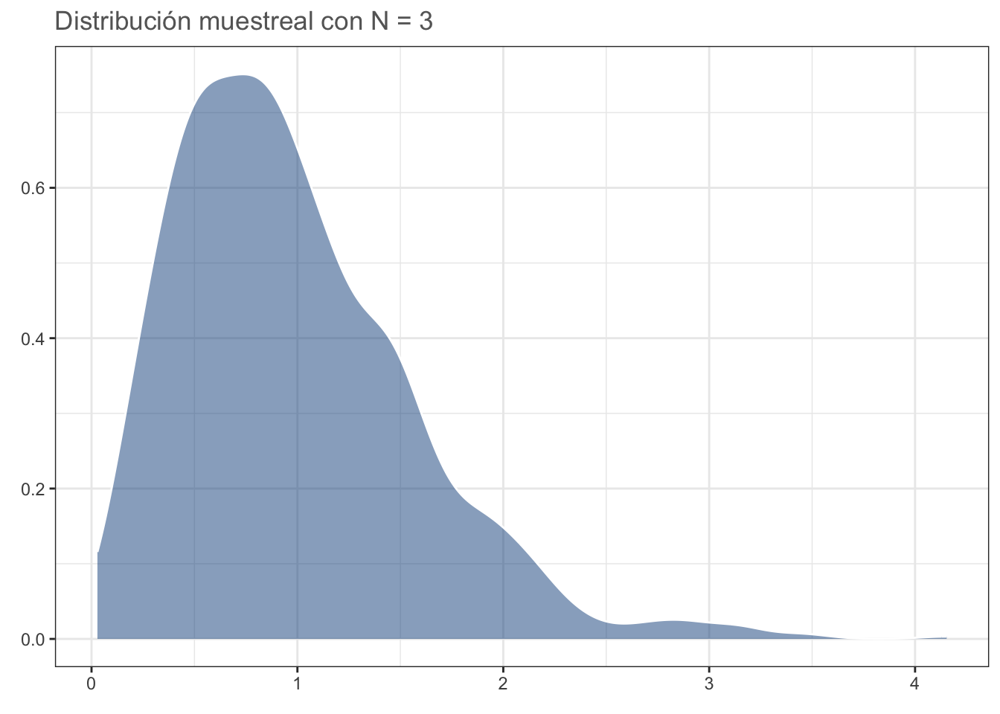
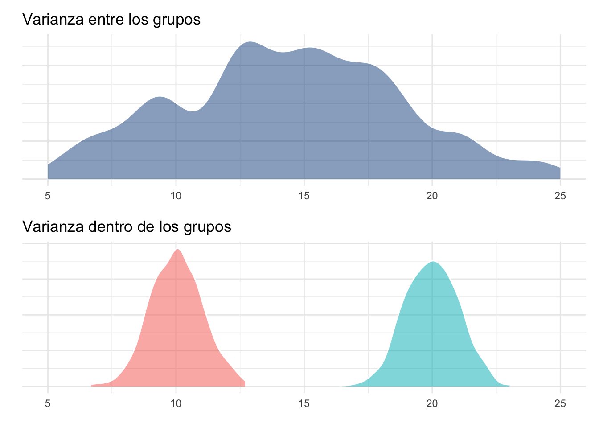
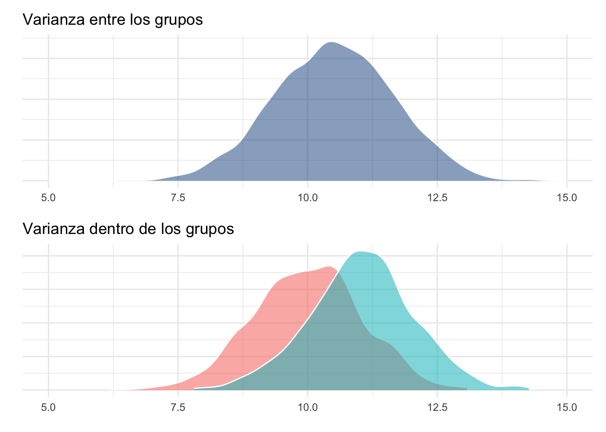

library(ggplot2)
library(corrplot)
library(gridExtra)
library(rstatix)
library(dplyr)
library(ggpubr)
library(patchwork)10 Técnicas paramétricas
10.1 Librerías
10.2 Introducción
Por fin dejaremos atrás los fundamentos de la estadística. Tal vez 10 sesiones con fundamentos se te hayan hecho largas, pero todos los conceptos que hemos visto tienen una razón de ser. No podía hablar de pruebas de hipótesis sin que antes supiéramos qué es la probabilidad y qué representa. No podíamos empezar a aplicar procedimientos estadísticos sin antes revisar las bases de R. No podíamos hacer visualizaciones efectivas sin hablar de las heurísticas correspondientes. En fin, creo que ya me entiendes. A partir de la siguiente sesión vamos a revisar solo la teoría correspondiente a cada prueba/técnica, asumiendo que ya cuentas con las bases que establecimos en las sesiones anteriores.
10.3 ¿Por qué paramétricas?
Lo primero que tenemos que abordar es ¿por qué se les conoce como pruebas paramétricas? Porque las inferencias que vamos a realizar son sobre los parámetros poblacionales, usualmente la media (\(\mu\)) y la varianza (\(\sigma\)). Ejemplos de pruebas paramétricas tenemos muchos, entre los más famosos tenemos la \(t\) de Student que revisamos en la sesión anterior, los análisis de la varianza (ANOVAs) que revisaremos en esta sesión, la correlación de Pearson y la regresión lineal que veremos en la siguiente, entre otros.
Nota
Nota para breviario cultural: todas las pruebas que mencioné con anterioridad son aplicaciones del modelo lineal general. ¿Eso qué significa? Que se asume que los grupos son separables linealmente, o que la relación entre dos o más variables es lineal.
Independientemente de la prueba o de la técnica, todas las técnicas paramétricas tienen al menos tres supuestos; i.e, requieren de al menos tres cosas:
- Que la distribución muestreal del valor de interés sea normal.
- Que las varianzas sean homogéneas.
- Que las muestras sean independientes.
La tercera sale sola si planteamos bien nuestro diseño experimental; es decir, que cada dato sea “independiente” de los demás. En otras palabras, que no sean mediciones de los mismos individuos, por ejemplo, o que las respuestas de cada individuo subsecuente no dependan del que estamos midiendo ahorita. Los primeros dos requieren de un poco más de explicación, así que vayamos paso a paso y hablemos de cada uno, empezando por la mayor tortura: el supuesto de normalidad.
10.4 Supuesto de Normalidad
Existe por ahí un artículo titulado “Normalidad estadística y biología: una relación tortuosa”. Si bien es cierto que el cómo se desarrollaron los análisis, y por lo tanto sus conclusiones, no tiene ni pies ni cabeza, ni ningún tipo de fundamento, el título me parece bastante llamativo porque desde que nos empezamos a aproximar a las pruebas de hipótesis se nos habla del supuesto de normalidad o de que “nuestros datos deben de ser normales”. Bueno, hablemos a fondo de este supuesto, de qué es, qué no es, y por qué es importante.
10.4.1 Versión corta
Si no quieres entrar en demasiados detalles puedes quedarte con lo que voy a decir aquí y seguir con tu camino. Si te interesa conocer un poco más puedes leer después la versión larga.
En pocas palabras, el supuesto de normalidad se lee “La distribución muestral de la media es normal”. Si nosotros realizamos muestreos con tamaños de muestra \(n\) y para cada uno estimamos la media, conforme \(n \rightarrow \infty\) la distribución de esa media se volverá normal. Esa es la distribución muestreal de la media. Esta es una relación no controversial pues, aunque con \(n \geq 30\) prácticamente lo garantizamos tenemos un problema: debemos de generalizar para cualquier \(n\) y simplificar, lo que nos lleva a que “las poblaciones muestreadas sigan una distribución normal”. Esto puede no ser práctico probarlo, pero sí que podemos utilizar nuestra muestra y ver si esta proviene de una distribución normal; ergo, aplicamos una prueba de normalidad para ver si nuestros datos se ajustan o no a una distribución normal.
10.4.2 Versión larga
Posiblemente la versión corta haya sido demasiado corta, y fue a propósito, pues me interesa que le des al menos una hojeada a la versión larga.
Volvamos al asunto de que estamos tratando con la distribución muestral de la media. Esto es un problemón, porque una muestra NO contiene información sobre ella. A final de cuentas, una distribución muestral es el producto de distintas muestras, entonces debemos de llenar esos “vacíos” de información utilizando el centro, la dispersión y otros estadísticos descriptivos, y asumimos una distribución normal. ¿Por qué una distribución normal? Podría ser extremadamente breve y decirte que porque muchísimos atributos se distribuyen naturalmente de manera estadísticamente normal, pero en realidad es debido a otro concepto: el Teorema del Límite Central.
10.4.2.1 Teorema del Límite Central
Este teorema establece que: “Dadas muestras aleatorias e independientes con N observaciones cada una, la distribución de sus medias se aproxima a una distribución normal conforme N incrementa, INDEPENDIENTEMENTE de la distribución poblacional”; es decir, mientras N sea grande, \(\bar{x} \sim Normal\). Para probar esto podemos hacer un ejercicio en el cual simulemos una población con distribución Gamma, cuya zona de mayor densidad se encuentra desplazada a la izquierda:
set.seed(0)
datos <- data.frame(x = 1:1000, y = rgamma(1000, 1))
gamma <- ggplot(data = datos, aes(y)) +
geom_density(fill = rgb(118,78,144,
maxColorValue = 255),
alpha = 0.5, colour = "white") +
theme_bw() +
labs(title = "Distribución Gamma",
x = element_blank(),
y = element_blank()) +
theme(text = element_text(colour = "gray40"))
#cairo_pdf("gamma.pdf", family = "Montserrat",
# height = 5, width = 5*1.6, pointsize = 20)
gamma
#dev.off()Con nuestra población definida, podemos seleccionar algunos tamaños de muestra, realizar 1000 muestreos aleatorios, obtener la media de cada muestreo y graficar su distribución. Primero para N = 3:
N = 3
medias <- data.frame(x = 1:1000,
y = replicate(1000,
mean(sample(datos$y, N))))
dist_n3 <- ggplot(data = medias, aes(y)) +
geom_density(fill = "dodgerblue4",
alpha = 0.5, colour = "white") +
theme_bw() +
labs(title = sprintf("Distribución muestreal con N = %d", N),
x = element_blank(),
y = element_blank()) +
theme(text = element_text(colour = "gray40"))
#cairo_pdf("n_3.pdf", family = "Montserrat",
# height = 5, width = 5*1.6, pointsize = 20)
dist_n3
#dev.off()Ahora para N = 10. La distribución se aproxima más a una distribución normal:
N = 10
medias <- data.frame(x = 1:1000,
y = replicate(1000,
mean(sample(datos$y, N))))
dist_n10 <- ggplot(data = medias, aes(y)) +
geom_density(fill = "dodgerblue4",
alpha = 0.5, colour = "white") +
theme_bw() +
labs(title = sprintf("Distribución muestreal con N = %d",
N),
x = element_blank(),
y = element_blank()) +
theme(text = element_text(colour = "gray40"))
#cairo_pdf("n_10.pdf", family = "Montserrat",
# height = 5, width = 5*1.6, pointsize = 20)
dist_n10#dev.off()Con N = 30 la distribución es más cercana a una normal que a la gamma, por lo que usualmente se acepta que: con N≥30 la distribución muestreal de la media DEBERÁ ser normal:
N = 30
medias <- data.frame(x = 1:1000,
y = replicate(1000, mean(sample(datos$y, N))))
dist_n30 <- ggplot(data = medias, aes(y)) +
geom_density(fill = "dodgerblue4",
alpha = 0.5, colour = "white") +
theme_bw() +
labs(title = sprintf("Distribución muestreal con N = %d",
N),
x = element_blank(),
y = element_blank()) +
theme(text = element_text(colour = "gray40"))
#cairo_pdf("n_30.pdf", family = "Montserrat",
# height = 5, width = 5*1.6, pointsize = 20)
dist_n30
#dev.off()Para comprobar, hagámos el ejercicio con una distribución uniforme; es decir, en la cual todos los valores tienen la misma probabilidad de ser obtenidos (desviaciones debido al generador de números “aleatorios”):
N = 30
datos <- data.frame(x = 1:1000, y = runif(1000))
unif <- ggplot(data = datos, aes(y)) +
geom_density(fill = rgb(118,78,144,
maxColorValue = 255),
alpha = 0.5, colour = "white") +
theme_bw() +
labs(title = "Distribución \"uniforme\"",
x = element_blank(),
y = element_blank()) +
theme(text = element_text(colour = "gray40"))
#cairo_pdf("unif.pdf", family = "Montserrat",
# height = 5, width = 5*1.6, pointsize = 20)
unif
#dev.off()medias <- data.frame(x = 1:1000,
y = replicate(1000,
mean(sample(datos$y, N))))
dist_n30 <- ggplot(data = medias, aes(y)) +
geom_density(fill = "dodgerblue4",
alpha = 0.5,
colour = "white") +
theme_bw() +
labs(title = sprintf("Distribución muestreal con N = %d",
N),
x = element_blank(),
y = element_blank()) +
theme(text = element_text(colour = "gray40"))
#cairo_pdf("n_30u.pdf", family = "Montserrat",
# height = 5, width = 5*1.6, pointsize = 20)
dist_n30
#dev.off()Un aspecto importante a considerar es la “Primera Propiedad Conocida” de la distribución normal: dadas muestras aleatorias e independientes con N observaciones cada una (tomadas de una distribución normal), la distribución de medias muestreales es normal e insesgada (i.e., centrada en la media poblacional), independientemente del tamaño de N. Por lo tanto, aún con un tamaño de muestra de 1 debería dar una distribución parecida a la normal. Comprobemos:
N <- 1
datos <- data.frame(x = 1:1000, y = rnorm(1000))
norm <- ggplot(data = datos, aes(y)) +
geom_density(fill = rgb(118,78,144,
maxColorValue = 255),
alpha = 0.5,
colour = "white") +
theme_bw() +
labs(title = "Distribución Normal",
x = element_blank(),
y = element_blank()) +
theme(text = element_text(colour = "gray40"))
#cairo_pdf("norm.pdf", family = "Montserrat",
# height = 5, width = 5*1.6, pointsize = 20)
norm#dev.off()medias <- data.frame(x = 1:1000,
y = replicate(1000,
mean(sample(datos$y, N))))
dist_n1 <- ggplot(data = medias, aes(y)) +
geom_density(fill = "dodgerblue4",
alpha = 0.5, colour = "white") +
theme_bw() +
labs(title = sprintf("Distribución muestreal con N = %d",
N),
x = element_blank(),
y = element_blank()) +
theme(text = element_text(colour = "gray40"))
#cairo_pdf("n_1.pdf", family = "Montserrat",
# height = 5, width = 5*1.6, pointsize = 20)
dist_n1
#dev.off()La implicación de esta propiedad es que entre menos “normal” (en términos de su distribución estadística) sea nuestra población de estudio, necesitaremos un mayor tamaño de muestra para que nuestra distribución muestral de la media sea normal. El problema surge cuando nos debemos de enfrentar a tamaños de muestra pequeños (n < 30).
Aunque siempre podemos asumir (literalmente) que nuestra población se encuentra normalmente distribuida y “capitalizar en la robustez del modelo estadístico subyacente”, abusando del TLC, o reconocer que tamaños de muestra más pequeños nos pueden acercar lo suficiente (n > 30 es para casos extremos) podemos hacerlo mejor. La tercera opción es la evaluación formal, la cual consiste en hacer una prueba de bondad de ajuste para conocer si nuestros datos se desvían o no de una distribución normal teórica. Antes de entrar a esos métodos, analicemos la prueba de bondad de ajuste más conocida: la prueba \(\chi^2\) de independencia.
10.5 Pruebas de bondad de ajuste
10.5.1 \(\chi^2\) de independencia
Esta prueba nos permite probar si la distribución de nuestros datos (frecuencias de variables nominales) son iguales a una distribución teórica. El ejemplo más sencillo lo tenemos al evaluar si la distribución de sexos en una población es diferente de 1:1. En este caso, la distribución de nuestros datos es binomial (dos categorías, verdadero/falso, éxito/fracaso, macho/hembra, etc.). En nuestro muestreo contamos 142 machos y 190 hembras. Coloquemos esos datos en un objeto y realicemos la prueba:
sexos <- c(machos = 142, hembras = 190)
sex_chi <- chisq.test(sexos)
sex_chi
Chi-squared test for given probabilities
data: sexos
X-squared = 6.9398, df = 1, p-value = 0.00843Veamos la distribución teórica gráficamente y veamos la ubicación del estadístico de prueba:
chi_data <- data.frame(x = rchisq(1000, 1))
chisq_plot <- ggplot(data = chi_data, aes(x)) +
geom_density(fill = rgb(118,78,144,
maxColorValue = 255),
alpha = 0.5, colour = "white") +
geom_vline(xintercept = sex_chi$statistic,
color = "firebrick") +
annotate(geom = "text",
x = sex_chi$statistic+1.1, y = 1,
label = sprintf("X^2 = %.2f",
round(sex_chi$statistic, 2))) +
theme_bw() +
labs(title = sprintf("Distribución X^2 teórica (g.l = %d)",
sex_chi$parameter),
x = element_blank(),
y = element_blank()) +
theme(text = element_text(colour = "gray40"))
#cairo_pdf("chi_plot.pdf", family = "Montserrat",
# height = 5, width = 5*1.6, pointsize = 20)
chisq_plot#dev.off()Partiendo del valor de p podemos concluir que la proporción fue diferente de nuestro modelo teórico 1:1, pero ¿qué pasa si nos interesara comprobar si es diferente a otra proporción, por ejemplo 40% machos y 60% hembras? En ese caso únicamente debemos de proporcionar un vector p en el cual establezcamos la probabilidad correspondiente a cada grupo:
chisq.test(sexos, p = c(0.4, 0.6))
Chi-squared test for given probabilities
data: sexos
X-squared = 1.0622, df = 1, p-value = 0.3027Aquí nuestros datos no ridiculizan a nuestra hipótesis de nulidad, por lo que no podemos rechazarla. Un ejemplo más complejo es el de la presentación, en donde tratamos de probar si el proceso de vacunación hizo alguna diferencia en el estado de salud de los empleados o, en otras palabras, ¿la incidencia de pneumonía fue la misma, INDEPENDIENTEMENTE de si los empleados se vacunaron o no? Al igual que en el caso anterior, coloquemos los datos en un objeto:
vacunas <- data.frame(no_vacuna = c(23, 8, 61),
vacuna = c(5, 10, 77),
row.names = c("neumococo", "otra_neumonia",
"sin_neumonia"))
vacunasAhora apliquemos la prueba:
vacs <- chisq.test(vacunas)
vacs
Pearson's Chi-squared test
data: vacunas
X-squared = 13.649, df = 2, p-value = 0.001087Como era de esperarse al ver las frecuencias, la incidencia de pneumonía aparentemente no fue la misma entre los empleados vacunados y los que no se vacunaron. En este caso, podemos extraer aún más información, tal y como la dependencia entre las variables. Para ello accederemos al atributo residuals de la salida de chisq.test, el cual representa los residuales de Pearson para cada celda:
vacs$residuals no_vacuna vacuna
neumococo 2.4053512 -2.4053512
otra_neumonia -0.3333333 0.3333333
sin_neumonia -0.9630868 0.9630868Valores positivos muestran una asociación positiva entre las variables correspondientes; es decir, la incidencia de neumonía por neumococo aumentó (signo positivo) en aquellos empleados que no fueron vacunados y viceversa, valores negativos muestran una asociación negativa; es decir, la incidencia disminuyó en aquellos que sí fueron vacunados. Si nuestro interés fuera saber qué tanto contribuyó cada celda al valor de \(\chi^2\) podemos elevar cada residual al cuadrado y dividirlo entre el valor de \(\chi^2\) observado, tal que:
contrib <- 100*((vacs$residuals^2)/vacs$statistic)
contrib no_vacuna vacuna
neumococo 42.390150 42.390150
otra_neumonia 0.814077 0.814077
sin_neumonia 6.795773 6.795773Evidentemente, los residuales más grandes tuvieron la mayor contribución que, en este caso, estuvo dada por la incidencia de neumonía por neumococo en ambos grupos. Podemos ver estos resultados de manera gráfica utilizando la librería corrplot:
corrplot::corrplot(contrib, is.corr = F)
Ahora que tenemos una idea sobre cómo funcionan las pruebas de bondad de ajuste, podemos regresar a hablar sobre las pruebas de normalidad.
10.5.2 Supuesto de Normalidad
Como imaginarás, las pruebas de normalidad son pruebas de bondad de ajuste en donde la distribución teórica es una distribución normal, aunque el modo en el cual se evalúan las desviaciones de la normalidad (i.e., las diferencias) es diferente para cada prueba. Para aplicarlas, utilizaremos la base de datos de muestras independientes del archivo datos_t, particularmente la columna DC:
dc <- openxlsx::read.xlsx("datos/datos_t.xlsx", sheet = 1)
dcPodemos hacer una primera valoración utilizando un gráfico de densidad con un gráfico de densidad normal teórico superpuesto:
set.seed(0)
norm_plot <- ggplot(data = dc, aes(DC)) +
geom_density(fill = rgb(118,78,144,
maxColorValue = 255),
colour = "white", alpha = 0.5) +
stat_function(fun = dnorm, n = 100,
args = list(mean = mean(dc$DC),
sd = sd(dc$DC))) +
# Límites expandidos para visualizar el
# kde normal "completo".
# El kde observado se encuentra extendido más allá
# de los límites de los datos:
xlim(c(40, 65)) +
theme_bw() +
labs(title = "Gráfico de densidad de DC vs. normal teórica",
x = element_blank(),
y = element_blank()) +
theme(text = element_text(colour = "gray40"))
#cairo_pdf("norm_plot.pdf", height = 5, width = 5*1.6, pointsize = 20)
norm_plot
#dev.off()¿Qué opinas? Apliquemos ahora las pruebas de normalidad:
10.5.2.1 Prueba de Shapiro-Wilk
La prueba más conocida para evaluar la normalidad de un conjunto de datos es la prueba de Shapiro-Wilk. Su estadístico de prueba (W) se calcula de una manera poco amigable, pero conceptualmente implica ordenar los valores de la muestra y evaluar las desviaciones (diferencias) con respecto a la media, la varianza y su covarianza (este concepto se retoma más adelante) esperadas. En pocas palabras, la covarianza indica cuánto cambia una variable (la media) con respecto a otra (la varianza).
¿Qué tiene que ver la covarianza con el Supuesto de Normalidad? Tiene que ver con la Segunda Propiedad Conocida de la Distribución Normal, la cual establece que Dadas observaciones aleatorias e independientes (de una distribución normal), la media muestral y la varianza muestral son independientes. En otras palabras, cuando tomas una muestra y la usas para estimar tanto la media como la varianza de la población, qué tanto puedes equivocarte sobre la media es independiente de qué tanto puedes equivocarte sobre la varianza. Esta es una característica única de la distribución normal y es una de las razones por la que la prueba de S-W es de las más (por no decir la más) utilizada y recomendada, especialmente para muestras pequeñas. En algunos estudios de simulación como este ha demostrado ser más sensible a las desviaciones de la normalidad que la prueba de Kolmogorov-Smirnov, aunque antes de explicarla apliquemos la prueba de S-W:
shapiro.test(dc$DC)
Shapiro-Wilk normality test
data: dc$DC
W = 0.95125, p-value = 0.6833El valor de p no nos permite rechazar nuestra hipótesis de nulidad a un \(\alpha = 0.05\), por lo que podemos concluir que los datos se ajustan a una distribución normal. Vuelve al gráfico de densidad normal, ¿qué opinas?
Como añadido, visualicemos la segunda propiedad conocida de la distribución normal:
means <- NA
sds <- NA
for (i in 1:1000) {
norm_data <- rnorm(10)
means[i] <- mean(norm_data)
sds[i] <- sd(norm_data)
}
mean_sd <- data.frame(mean = means, sd = sds)
prop_2 <- ggplot(data = mean_sd, aes(x = mean, y = sd)) +
geom_point(color = "dodgerblue4", size = 2, alpha = 0.5) +
theme_bw() +
labs(title =
"Segunda Propiedad Conocida de la Distribución Normal",
subtitle = "1000 muestreos de una población normal",
x = "Media",
y = "Desviación Estándar") +
theme(text = element_text(colour = "gray40"))
#cairo_pdf("prop_2.pdf", family = "Montserrat",
# height = 5, width = 5*1.6, pointsize = 20)
prop_2
#dev.off()Con una distribución Gamma:
means <- NA
sds <- NA
for (i in 1:1000) {
gamma_data <- rgamma(10, shape = 1)
means[i] <- mean(gamma_data)
sds[i] <- sd(gamma_data)
}
mean_sd <- data.frame(mean = means, sd = sds)
prop_g <- ggplot(data = mean_sd, aes(x = mean, y = sd)) +
geom_point(color = "dodgerblue4", size = 2, alpha = 0.5) +
theme_bw() +
labs(title =
"Segunda Propiedad Conocida de la Distribución Normal",
subtitle = "1000 muestreos de una población gamma",
x = "Media",
y = "Desviación Estándar") +
theme(text = element_text(colour = "gray40"))
#cairo_pdf("prop_g.pdf", family = "Montserrat",
# height = 5, width = 5*1.6, pointsize = 20)
prop_g
#dev.off()Ejericio: Realiza el mismo gráfico para la columna DC y para la columna CH.
10.5.2.2 Prueba Kolmogorov-Smirnov
A diferencia de la prueba S-W, la prueba K-S compara las función de densidad acumulada empírica (observada) vs. una función de densidad acumulada teórica (no necesariamente normal), lo cual causa que sea sensible a desviaciones en el centro de la distribución pero no en las colas; sin embargo, es importante mencionar, que la prueba K-S es convergente; es decir, que conforme \(N \rightarrow \infty\) la prueba converge a la “respuesta verdadera” en términos de probabilidad. Esta razón hace que esta prueba no se recomiende para tamaños de muestra pequeños. Para aplicarla:
ks.test(dc$DC, "pnorm")
Exact one-sample Kolmogorov-Smirnov test
data: dc$DC
D = 1, p-value < 2.2e-16
alternative hypothesis: two-sidedA diferencia del caso anterior, esta prueba si tuvo evidencia suficiente para ridiculizar nuestra hipótesis nula, por lo que podemos concluir que nuestros datos no se ajustan a una distribución normal. Vuelve nuevamente al gráfico KDE. ¿Qué opinas?
Veamos las densidades acumuladas:
# Generamos una cdf normal teórica:
cdf <- data.frame(norm = rnorm(1000,
mean = mean(dc$DC),
sd = sd(dc$DC)))
# Graficamos una vs. la otra:
cdfplot <- ggplot(data = dc, aes(DC)) +
stat_ecdf(geom = "step",
colour = rgb(118, 78, 144,
maxColorValue = 255),
alpha = 1) +
stat_ecdf(data = cdf, aes(norm),
geom = "line", colour = "black") +
theme_bw() +
labs(title = "Densidades acum. empírica y teórica para DC",
x = element_blank(),
y = element_blank())
#cairo_pdf("cdf.pdf", family = "Montserrat",
# height = 5, width = 5*1.6, pointsize = 20)
cdfplot#dev.off()Conjuntando con el gráfico kde original podemos ver por qué la prueba K-S arrojó un resultado significativo, ya que hubo desviaciones importantes en la zona central. Interpretar correctamente un gráfico CDF NO es sencillo y requiere de experiencia, por lo que únicamente lo incluí para acompañar a la prueba que se basa en la densidad acumulada.
Habiendo explicado dos de las pruebas de normalidad más comunes, pasemos a los análisis paramétricos. El primero de ellos lo revisamos durante la clase de pruebas de hipótesis: la prueba t de Student, por lo que pasaremos directamente al Análisis de la Varianza.
10.6 Análisis de la Varianza
En términos simples, podemos pensar en el ANOVA como una extensión de la prueba t-Student a más de dos grupos a comparar. Durante la clase de Comparaciones Multivariadas abordamos el riesgo que conlleva realizar múltiples pruebas de hipótesis (comparaciones) en nuestros datos; es decir, el problema de realizar dos o más comparaciones entre grupos como si se tratara de pruebas independientes. Por el momento, solo ten en mente que se incrementa la posibilidad de obtener un falso positivo únicamente por azar, por lo que hay que utilizar una técnica adecuada y es ahí donde entra el ANOVA o, mejor dicho, los ANOVAs. Como te imaginarás, estas pruebas nos permiten comparar medias entre más de dos grupos, aunque aquí la comparación se realiza de manera global y la hipótesis alternativa se expresa como “Al menos una de las medias es diferente”. Esto quiere decir que el ANOVA no nos dirá entre qué par(es) de grupos se encontraron las diferencias, sino que habrá que acompañarlo de una prueba post-hoc. Esta prueba es la prueba de diferencias honestas (HSD) de Tukey, la cual se encuentra basada en la distribución de los rangos estudentizados y fue diseñada para no incrementar la probabilidad de falsos positivos al realizar múltiples comparaciones. En esta sesión revisaremos tres modaliades de ANOVA: de una vía, de dos vías y factorial, de menor a mayor complejidad, aunque estos no son los únicos. Entre los demás diseños de ANOVA se encuentran el ANOVA de medidas repetidas (estudios de crecimiento en laboratorio con medidas intermedias entre el inicio y el final, por ejemplo) o el ANOVA anidado, en el cual el diseño es similar a una muñeca rusa.
Antes de aplicar y explicar los modelos de ANOVA, es necesario desarrollar una intuición sobre el procedimiento. El nombre “Análisis de Varianza” viene de que, literalmente, se utilizan las varianzas para comparar las medias. Aunque el proceso matemático implica calcular promedios de promedios, varias sumas de cuadrados y cuadrados medios del error, podemos resumirlo para fines prácticos en que la comparación se realiza mediante una razón/cociente, tal que:
\[F = \frac{\sigma^2_{entre}}{\sigma^2_{dentro}}\]
Sé que esto puede sonar muy poco intuitivo, pero si nos detenemos un poco a analizar la ecuación podemos darle mucho sentido. La varianza dentro de los grupos podemos considerarla como la varianza “promedio” de cada grupo (razón por la que es importante que estas sean homogéneas entre todos nuestros grupos), mientras que la varianza entre los grupos representa la “separación” (dispersión) entre los grupos (sin considerar el error). Partiendo de esto, es evidente que si la varianza entre grupos es muy grande en relación a la varianza dentro de los grupos podemos inferir que existe un efecto del factor de agrupamiento pues “no hay” (ojo a las comillas y los supuestos) otra forma de que las distribuciones de los grupos se desplacen.
Gráficamente la varianza dentro de los grupos se representaría de la siguiente manera:
anov_sim <- data.frame(grupo = as.factor(c(rep("A", 1000),
rep("B", 1000))),
y = c(rnorm(1000, mean = 10, sd = 1),
rnorm(1000, mean = 20, sd = 1)))
dentro_plot <- ggplot(data = anov_sim,
aes(y, fill = grupo, alpha = 0.5)) +
geom_density(trim = T, show.legend = F,
colour = "white") +
theme_minimal() +
labs(title = "Varianza dentro de los grupos",
x = element_blank(),
y = element_blank()) +
scale_y_continuous(labels = NULL) +
xlim(c(5, 25))
dentro_plotMientras que la varianza entre los grupos podemos, para fines de interpretación, visualizarla como la varianza dada por ambos grupos. En realidad esto representaría la varianza total y la varianza entre los grupos es el resultado de eliminar la varianza dada por el error, pero sigamos con el ejemplo:
anov_sim$tot <- rnorm(200, mean = 15, sd = sd(anov_sim$y))
entre_plot <- ggplot(data = anov_sim, aes(tot)) +
geom_density(fill = "dodgerblue4",
alpha = 0.5, colour = "white") +
theme_minimal() +
labs(title = "Varianza entre los grupos",
x = element_blank(),
y = element_blank()) +
scale_y_continuous(labels = NULL) +
xlim(c(5, 25))
entre_plotWarning: Removed 90 rows containing non-finite values (`stat_density()`).Visualizándolas como si de un cociente se tratara es posible darse cuenta cómo la varianza “entre” los grupos es mucho mayor que la varianza dentro de los grupos, lo cual daría un valor de la razón de varianzas muy alto, sugiriendo un efecto del factor de agrupamiento.
#cairo_pdf("anova_plot.pdf", family = "Montserrat",
# height = 5, width = 5*1.6, pointsize = 20)
entre_plot/dentro_plotWarning: Removed 90 rows containing non-finite values (`stat_density()`).
#dev.off()Veamos qué pasa cuando las medias son más cercanas entre sí:
anov_sim2 <- data.frame(grupo = as.factor(c(rep("A", 1000),
rep("B", 1000))),
y = c(rnorm(1000, mean = 10, sd = 1),
rnorm(1000, mean = 11, sd = 1)))
anov_sim2$tot <- rnorm(2000, mean(10.5), sd(anov_sim2$y))
dentro_plot2 <- ggplot(data = anov_sim2,
aes(y, fill = grupo, alpha = 0.5)) +
geom_density(trim = T, show.legend = F,
colour = "white") +
theme_minimal() +
labs(title = "Varianza dentro de los grupos",
x = element_blank(),
y = element_blank()) +
scale_y_continuous(labels = NULL) +
xlim(c(5, 15))
entre_plot2 <- ggplot(data = anov_sim2, aes(tot)) +
geom_density(fill = "dodgerblue4",
alpha = 0.5, colour = "white") +
theme_minimal() +
labs(title = "Varianza entre los grupos",
x = element_blank(),
y = element_blank()) +
scale_y_continuous(labels = NULL) +
xlim(c(5, 15))
#cairo_pdf("anova_plot2.pdf", family = "Montserrat",
# height = 5, width = 5*1.6, pointsize = 20)
entre_plot2/dentro_plot2
#dev.off()10.6.1 Supuesto de Homogeneidad de Varianzas
Como podrás imaginar, el que las varianzas de los grupos no sean homogéneas generará un sesgo al momento de calcular el cociente y, en consecuencia, el nivel de significancia de la prueba. Esto es lo que da origen al Supuesto de Homogeneidad de Varianzas. Existe una gran diversidad de pruebas, cada una con sus consideraciones, fortalezas y desventajas, pero analizaremos únicamente las (posiblemente) más conocidas.
10.6.1.1 Prueba de Bartlett
La prueba de Bartlett se considera como la prueba Uniformemente Más Poderosa; es decir, la que es menos propensa a cometer un falso negativo para cualquier valor de \(\alpha\). Este poder, sin embargo, tiene sus bemoles o su bemol, mejor dicho. Esta prueba se apoya TOTALMENTE en que la variable de interés en cada factor se encuentra normalmente distribuída (¡Hola de nuevo, Supuesto de Normalidad!). De violarse este supuesto el valor de \(\alpha_v\) (verdadero) para la prueba puede ser mayor o menor al definido por nosotros (\(\alpha_n\), nominal). De manera particular, si la distribución de la variable analizada presenta una curtosis negativa el \(\alpha_v\) será menor al nominal, mientras que con una curtosis positiva será el caso contrario. Esto lleva a que hagamos una prueba más o menos estricta de lo que habíamos planeado originalmente y que nuestros resultados no sean confiables. De cualquier manera, veamos cómo aplicarla:
bartlett.test(y~grupo, data = anov_sim)
Bartlett test of homogeneity of variances
data: y by grupo
Bartlett's K-squared = 0.4309, df = 1, p-value = 0.5115En este caso, no podemos ridiculizar nuestra hipótesis de nulidad, por lo que podemos concluir que las varianzas entre nuestros grupos son homogéneas (y deben serlo, pues así las especificamos).
10.6.1.2 Prueba de Levene
Es la alternativa recomendada por muchos a la prueba de Bartlett. Aunque no es tan poderosa, sí es robusta a las violaciones al supuesto de normalidad, de modo que el \(\alpha\) verdadero es muy similar al nominal para una gran cantidad de distribuciones, aunque es insensible a distribuciones simétricas con colas altas como la t de Student o doble exponencial (también conocida como distribución de Laplace). Aplicarla también es sumamente sencillo:
car::leveneTest(y~grupo, data = anov_sim)Como era de esperarse, el resultado es consistente con la prueba de Bartlett para este caso.
10.6.2 ANOVA de una sola vía
Habiendo revisado los conceptos básicos detrás del ANOVA, podemos pasar a aplicar algunos modelos. El más sencillo es el ANOVA de una sola vía, el cual es el caso más sencillo; es decir, comparamos una sola variable numérica entre los niveles de un solo factor (pesos finales para tres alimentos distintos, por ejemplo). Para ejemplificarlo utilizaremos la base datos1 2.csv que se trabajó para la tarea de Intervalos de confianza, con una columna extra: id, el cual es un identificador para cada individuo. Esta columna fue añadida únicamente para ejemplificar un caso de ANOVA posterior. En este ejemplo, compararemos los pesos totales entre los tres periodos (OJO: este es un diseño para un ANOVA factorial, únicamente lo utilizaremos como ejemplo).
El primer paso es, evidentemente, cargar la base de datos:
df <- read.table("datos/Datos1 2.csv", header = F, skip = 1, sep = ",")
colnames(df) <- c("Dieta", "Periodo", "Rep", "LT", "PT", "id")
df$Periodo <- factor(df$Periodo, levels = c("I", "M", "F"))
head(df)10.6.2.1 Aplicación del ANOVA
El siguiente paso es aplicar el ANOVA. El valor de p es bastante bajo, lo cual ridiculiza nuestra hipótesis de nulidad y concluimos que al menos un par de medias son significativamente diferentes entre sí (\(F_{2, 155} = 574.3; p < 0.0001\)).
una_via <- aov(PT~Periodo, data = df)
summary(una_via) Df Sum Sq Mean Sq F value Pr(>F)
Periodo 2 10.600 5.300 574.3 <2e-16 ***
Residuals 155 1.431 0.009
---
Signif. codes: 0 '***' 0.001 '**' 0.01 '*' 0.05 '.' 0.1 ' ' 1
22 observations deleted due to missingnessTe has de preguntar, ¿las medias de qué grupos son diferentes? Eso no lo podemos saber con un ANOVA, sino que hay que aplicar una prueba post-hoc: una prueba que evalúe las diferencias entre cada par de grupos.
10.6.2.2 Prueba post-hoc
Esta prueba se construye a partir de la distribución de rangos estudentizados, y fue diseñada para evitar el conflicto entre el \(\alpha\) y el número de comparaciones, por lo que la interpretación del valor de p es directa (sin correcciones).
Importante
¿Por qué no aplicar una prueba \(t\) para cada par de grupos? Porque en ese caso inflaríamos nuestro \(\alpha\). Hablaremos más de esta relación y algunas correcciones al valor de p en el Capítulo 16. Por el momento quédate con que cada prueba para comparar múltiples grupos (tipo ANOVA) tiene su prueba post-hoc que permite realizar comparaciones pareadas.
En este caso, el valor de p fue muy pequeño para las tres comparaciones, por lo que rechazamos nuestra hipótesis de nulidad en los tres casos. El resto de la tabla es también informativo, pues nos indica la magnitud de las diferencias y sus intervalos de confianza (tal y como en la prueba t de Student):
TukeyHSD(una_via) Tukey multiple comparisons of means
95% family-wise confidence level
Fit: aov(formula = PT ~ Periodo, data = df)
$Periodo
diff lwr upr p adj
M-I 0.2949615 0.2518882 0.3380349 0
F-I 0.6376957 0.5931429 0.6822484 0
F-M 0.3427341 0.2967181 0.3887501 010.6.2.3 Comprobación de supuestos: ANOVA como un modelo lineal
El ANOVA es, en realidad, un modelo lineal disfrazado de otra cosa. Este “disfraz” se lo puso Ronald Fisher cuando desarrolló una prueba para estudiar genética y rendimientos de cultivos (el origen de las pruebas de hipótesis de nulidad); sin embargo, la regresión lineal surgió casi 100 años antes (en el siglo 19), gracias a que Legendré y Gauss quisieron predecir movimientos planetarios. Dejando el breviario cultural a un lado, hoy en día los resultados de un ANOVA son, justamente, un “maquillaje” que se aplica a una regresión lineal. Tan es así que podemos extraer coeficientes de nuestro objeto de ANOVA:
una_via$coefficients(Intercept) PeriodoM PeriodoF
0.5510000 0.2949615 0.6376957 Comparemos estos con los coeficientes de un modelo lineal que tenga la misma fórmula que nuestro modelo ANOVA:
lm(PT~Periodo, data = df)$coefficients(Intercept) PeriodoM PeriodoF
0.5510000 0.2949615 0.6376957 Como era de esperarse, son exactamente los mismos y, seguramente, en este punto te estés preguntando cómo es que ajustamos un modelo de regresión lineal si nuestros predictores son categóricos. Esa es una pregunta que dejaremos para otro momento, lo importante es que entonces el supuesto de normalidad aplica sobre los residuales, no sobre nuestros valores crudos. ¿Por qué? La explicación es bastante intuitiva: Un modelo perfecto tiene residuales exactamente iguales a 0; es decir, todas las diferencias entre los valores observados y predichos son iguales a 0. Evidentemente esto usualmente no sucede (más adelante veremos que debemos de desconfiar de un modelo con un error muy pequeño), pero esperamos que estos residuales estén mayormente acumulados alrededor de 0 o, en otras palabras, que tengamos muy pocos valores que se encuentren lejos de nuestra predicción. Apliquemos entonces una prueba de Shapiro-Wilk a nuestros residuales:
shapiro.test(una_via$residuals)
Shapiro-Wilk normality test
data: una_via$residuals
W = 0.96043, p-value = 0.0001769¿Qué pasa con la homogeneidad de varianzas? En cualquier modelo (lineal o no), la homocedasticidad hace referencia a que la dispersión de los residuales sea homogénea a lo largo del intervalo del predictor; es decir, que no tengamos áreas donde el error sea más grande. Aquí nuestro predictor (el periodo) es categórico, por lo que tiene sentido evaluar si las varianzas de todos nuestros grupos son iguales. A final de cuentas, el que un grupo tenga una mayor dispersión va a causar que los residuales en ese grupo tengan una mayor dispersión. Comprobamos antes que nuestros residuales no son normales, por lo que podemos aplicar la prueba de Levene:
car::leveneTest(PT~Periodo, data = df)Nos llevamos una bastante desagradable sorpresa: nuestras varianzas no son homogéneas. Esto, como sabes, hace que el valor de p de nuestro ANOVA no sea confiable, pues las varianzas dentro de los grupos contribuyen de diferente manera a la varianza entre los grupos.
Importante
Esta última explicación seguramente te hizo preguntarte si la misma lógica no aplica también para la normalidad de cada grupo y la respuesta es “sí y no”. Para explicarlo primero realicemos las pruebas de normalidad para cada uno de nuestros grupos, utilizando la función shapiro_test de rstatix:
df |> group_by(Periodo) |> shapiro_test(PT)Podemos considerar que la distribución de PT en cada grupo proviene de una distribución normal y, por lo tanto, que cumplimos con el supuesto de normalidad, ¿no? Pues no. En realidad, la distribución total de PT es una mezcla de tres distribuciones normales, pero la distribución de la variable en sí misma no necesariamente debe de ser normal. De hecho, si los grupos están bien segregados, no tiene sentido esperar que la distribución marginal (independientemente del grupo) sea normal. ¿Qué si tiene sentido? esperar que la distribución condicional (considerando los grupos) sea normal, lo que nos lleva de nuevo a los residuales. En otras palabras, la normalidad de los datos crudos, no es relevante, sino la normalidad de los residuales. Puede ser que, como en este caso, los grupos tengan distribuciones normales pero no los residuales. El caso contrario también puede darse: que cada grupo no siga una distribución normal pero sí los residuales.
Por otra parte, al tratarse de un modelo lineal podemos aprovechar el paquete performance para evaluar el ajuste de nuestro modelo y verificar sus supuestos:
# cairo_pdf("model1.pdf")
performance::check_model(una_via)
# dev.off()Cuando lleguemos a modelo lineal vamos a explicar a más detalle cada una de estas gráficas, pero la interpretación está en el subtítulo de cada una. También podemos hacer las pruebas correspondientes utilizando este paquete. Desafortunadamente los resultados son solo la decisión (sin el valor del estadístico de prueba y los parámetros de la distribución):
performance::check_normality(una_via)Warning: Non-normality of residuals detected (p < .001).performance::check_homogeneity(una_via, method = "auto")Warning: Variances differ between groups (Fligner-Killeen Test, p = 0.000).Dicho esto, subamos un escalón más en la escalera que es ANOVA.
10.6.3 ANOVA de dos vías
Si una vía es a un factor, dos vías es a dos factores. En este análisis compararemos el efecto de dos factores simultáneamente, pero de manera independiente; es decir, compararemos los grupos de cada factor sin considerar que tenga una interacción con el otro.
Nota
¿Qué es la interacción? Eso lo veremos más adelante, pero se resume a que el efecto de un factor dependa del efecto de otro.
Nuestro segundo factor será la Dieta. Los pasos son exactamente los mismos que en el anterior:
10.6.3.1 Aplicación del ANOVA
El ANOVA de dos vías es un caso especial del ANOVA factorial, en el cuál únicamente hay dos factores y NO se considera su interacción, por lo que el modo de declararlo es una fórmula en la cuál los factores se consideran de manera aditiva: Respuesta~Factor1+Factor2. La forma tradicional de reportar los resultados de este ANOVA sería: hubo un efecto significativo de las dietas (F(2, 153) = 11.45; p < 0.0001) y de los periodos (F(2, 153) = 560.42; p < 0.0001).
dos_vias <- aov(PT~Dieta+Periodo, data = df)
summary(dos_vias) Df Sum Sq Mean Sq F value Pr(>F)
Dieta 2 0.212 0.106 11.45 2.33e-05 ***
Periodo 2 10.399 5.199 560.42 < 2e-16 ***
Residuals 153 1.419 0.009
---
Signif. codes: 0 '***' 0.001 '**' 0.01 '*' 0.05 '.' 0.1 ' ' 1
22 observations deleted due to missingness10.6.3.2 Comprobación de Supuestos
No es una sorpresa que al añadir un factor más los residuales tampoco sean normales, ni que las varianzas de nuestros grupos no sean homogéneas:
performance::check_normality(dos_vias)Warning: Non-normality of residuals detected (p < .001).performance::check_homogeneity(dos_vias, method = "auto")Warning: Variances differ between groups (Fligner-Killeen Test, p = 0.020).10.6.3.3 Prueba post-hoc.
Afortunadamente esto es solo un ejemplo (:P) y podemos seguir con la prueba post-hoc. La implementación es la misma que en el caso anterior. Algo a notar es que la salidaes una lista y que podríamos acceder a los resultados de cualquier factor utilizando el operador $ (TukeyHSD(aov_obj)$factor). Aquí, las diferencias se encontraron entre la dieta C y las otras dos, pero no entre A y B.
TukeyHSD(dos_vias) Tukey multiple comparisons of means
95% family-wise confidence level
Fit: aov(formula = PT ~ Dieta + Periodo, data = df)
$Dieta
diff lwr upr p adj
B-A -0.02402094 -0.06672932 0.01868745 0.3801380
C-A -0.09036834 -0.13594353 -0.04479315 0.0000176
C-B -0.06634740 -0.11227232 -0.02042249 0.0023101
$Periodo
diff lwr upr p adj
M-I 0.2912145 0.2480228 0.3344062 0
F-I 0.6266462 0.5819709 0.6713214 0
F-M 0.3354316 0.2892891 0.3815741 0¿Cómo interpretarías estos resultados? ¿podemos confiar en ellos? Veamos qué pasa con las distribuciones utilizando un gráfico de interacción:
ggplot(data = df, aes(x = Dieta, y = PT, fill = Periodo)) +
geom_violin(alpha = 0.5, show.legend = T) +
labs(title = "Distribución de PT en los tres momentos de medición",
x = element_blank(),
y = element_blank()) +
theme_bw()Warning: Removed 22 rows containing non-finite values (`stat_ydensity()`).Es evidente que en los tres tratamientos hubo un crecimiento, el cual además parece haber sido bastante similar. Este es un ejemplo del error de tipo III que mencionaba en la clase de pruebas de hipótesis: utilizar la matemática correcta para responder la pregunta equivocada. Veamos qué pasa si realizamos un ANOVA factorial.
10.6.4 ANOVA factorial
Como te podrás imaginar a partir de lo mencionado sobre el ANOVA de dos vías, este ANOVA es la versión más generalizada en la cual podemos utilzar más de dos factores y analizar su interacción; es decir, su interdependencia. Sigamos con la base anterior, en este caso considerando también el factor réplica:
df$Rep <- factor(df$Rep, levels = c("A", "B"))10.6.4.1 Aplicación del ANOVA
La única diferencia con el caso anterior es que esta vez utilizaremos el operador * para añadir los nuevos términos, en vez de hacerlo de forma aditiva. Haciendo esto la tabla del ANOVA cambia, en donde primero aparece el efecto de cada factor analizado de manera independiete (como si hubieramos hecho un ANOVA de “tres vías”) y después los términos de interacción. La interacción entre dos factores representa un efecto combinado de los factores involucrados en la variable analizada; es decir, cuando hay interacción entre dos factores el efecto de uno “depende” del el nivel del otro. Aquí no tuvimos interacciones significativas. Tal vez la interacción entre los tres factores se vea sospechosamente cerca de nuestro umbral de significancia, pero recuerda que no hay “efectos casi significativos”.
fact <- aov(PT~Dieta*Periodo*Rep, data = df)
summary(fact) Df Sum Sq Mean Sq F value Pr(>F)
Dieta 2 0.212 0.106 12.185 1.32e-05 ***
Periodo 2 10.399 5.199 596.509 < 2e-16 ***
Rep 1 0.060 0.060 6.874 0.00971 **
Dieta:Periodo 4 0.053 0.013 1.522 0.19912
Dieta:Rep 2 0.001 0.000 0.038 0.96240
Periodo:Rep 2 0.048 0.024 2.755 0.06703 .
Dieta:Periodo:Rep 4 0.038 0.009 1.076 0.37066
Residuals 140 1.220 0.009
---
Signif. codes: 0 '***' 0.001 '**' 0.01 '*' 0.05 '.' 0.1 ' ' 1
22 observations deleted due to missingnessLo que sí llama la atención es el resultado “significativo” para las réplicas. La prueba de diferencias honestas de Tukey sugiere que rechacemos la hipótesis nula; es decir, que la media de la réplica A fue superior a la media de la réplica B en un promedio de 0.038 g. Tomando eso en cuenta, ¿son realmente diferencias significativas?
TukeyHSD(fact)$Rep diff lwr upr p adj
B-A -0.03871758 -0.06808625 -0.009348919 0.01014Si analizamos el gráfico de interacción correspondiente podemos ver que, en efecto, la réplica B presentó menores pesos totales, especialmente en el periodo final. El problema es que las distribuciones no están ni remotamente cerca de ser normales. Recordarás que en su momento dijimos que el ANOVA es relativamente robusto a violaciones del supuesto de normalidad o, mejor dicho, que era más importante el supuesto de homogeneidad de varianzas. Esto es cierto pero tampoco debemos de olvidar que el objetivo es comparar las medias, por lo que tener distribuciones amorfas como en este caso puede sesgar nuestra inferencia:
ggplot(data = df, aes(x = Periodo, y = PT, fill = Rep)) +
geom_violin(alpha = 0.5, show.legend = T) +
labs(title = "Distribución de PT en los tres momentos de medición",
x = element_blank(),
y = element_blank()) +
theme_bw() + facet_wrap(~Dieta)10.6.4.2 Comprobación de supuestos
El supuesto de normalidad, como era de esperarse, sigue sin sostenerse pero ¡sorpresa! Ahora no hay evidencia para rechazar que las varianzas de los grupos sean iguales entre sí. Esto se debe a que, a diferencia de los casos anteriores, ahora estamos capturando la variación a más niveles. La pregunta a realizarse aquí es, ¿podemos confiar en TODOS los resultados de este ANOVA?
performance::check_normality(fact)Warning: Non-normality of residuals detected (p = 0.003).performance::check_homogeneity(fact, method = "auto")OK: There is not clear evidence for different variances across groups (Fligner-Killeen Test, p = 0.104).Aunque me encantaría seguir exprimiento estos datos, si regresamos brevemente a la tabla del ANOVA veremos que hubo 22 observaciones faltantes, correspondientes a la mortalidad durante el experimento. Debido a la impraciticidad/imposibilidad de marcar o identificar cada guppy no es posible aplicar un anova de medidas repetidas; sin embargo, podemos ejemplificarlo con otros datos.
10.6.5 ANOVA de medidas repetidas
El ANOVA de medidas repetidas es otro de los modelos de ANOVA, el cual podemos considerar como una extensión de la prueba t para muestras dependientes; es decir, en la cual los mismos individuos fueron medidos en más de dos ocasiones, denominado ANOVA de medidas repetidas de una vía. Si tenemos no solo los distintos tiempos de medición sino también factores adicionales entonces tendremos ANOVAs de medidas repetidas de dos vías (tiempo y un factor adicional) o de tres vías (tiempo y dos factores adicionales). Al igual que en el ANOVA “normal” comencemos desde abajo con el de una vía.
10.6.5.1 ANOVA de medidas repetidas de una vía
Carguemos los datos de ejemplo (selfesteem de la librería datarium), los cuales son una medida de autoestima medida en tres ocasiones distintas:
selfesteem <- datarium::selfesteem
head(selfesteem)La base se encuentra en formato corto, por lo que habrá que pasarla a formato largo:
estima <- selfesteem |>
gather(key = "time",
value = "score",
t1, t2, t3) |>
convert_as_factor(id, time)
head(estima)10.6.5.1.1 Aplicación del ANOVA
Esta vez no utilizaremos la notación de fórmula ni tan siquiera la función aov, sino que recurriremos a la función anova_test() de la librería rstatix para hacer más intuitiva la declaración, donde data es el data.frame con los datos (dah!), dv es la variable dependiente; es decir, nuestra variable a comparar, wid es un identificador único para cada individuo y within el factor dentro del cual queremos hacer las comparaciones:
anova_rep1 <- rstatix::anova_test(data = estima,
dv = score,
wid = id,
within = time, type = 3)
get_anova_table(anova_rep1)
Importante
Los grados de libertad del numerador son k - 1, mientras que los del denominador son (k - 1)(n-1), donde k es el número de medidas repetidas y n el número de individuos.
Aquí, además de los resultados esperados en nuestra tabla de ANOVA, tenemos un término adicional: ges. Este hace referencia a una medida del tamaño del efecto conocida como \(\eta^2\) (eta cuadrada) generalizada. Esta va de 0 a 1, donde 0 es nulo efecto y 1 es que toda la varianza de los datos puede ser explicada por el factor. ¿Te suena a \(R^2\)? Son bastante similares. Un problema es que mide la varianza en la muestra, no la población. Corolario: es mejor analizar las diferencias entre los grupos, especialmente en el contexto de la pregunta que queremos resolver. El modo de reportar estos resultados sería algo como:
“Las medidas de autoestima a través del tiempo fueron significativamente diferentes (\(F_{2,18}\) = 55.5, p < 0.0001; \(\eta^2\) generalizado = 0.82)”
Como breviario, el término \(\eta^2\) generalizado lo puedes encontrar también como \(\hat{\epsilon}\).
10.6.5.1.2 Comprobación de supuestos
¿Cómo comprobamos los supuestos? Comencemos con el supuesto de homogeneidad de varianzas o, en el caso de ANOVA de medidas repetidas, el supuesto de esfericidad. Este supuesto es una “extensión” del supuesto de homogeneidad de varianzas. Definimos esfericidad como la condición en la que las varianzas de las diferencias entre todas las combinaciones de los niveles de interés son iguales. La violación de este supuesto conlleva un incremento en la probabilidad de un falso positivo; es decir, vuelve a la prueba demasiado “liberal” o “crédula”. Aunque este supuesto es sumamente importante, si utilizamos rstatix::anova_test como arriba no necesitamos probarlo directamente, pues la función hace la prueba correspondiente (prueba de Mauchly para esfericidad) y, además, aplica una corrección (corrección de Greenhouse-Geisser) a los grados de libertad. Si te interesa ver los resultados de esta prueba puedes verla en los atributos de anova_rep1. En este caso no podemos rechazar la hipótesis de nulidad de la esfericidad.
anova_rep1$`Mauchly's Test for Sphericity`¿Qué pasa con el supuesto de normalidad? Se vuelve ligeramente problemático, pues la gente de rstatix no devuelve los residuales, entonces toca ajustar el modelo “a mano”:
anova_rep1 <- aov(score~time+Error(id), data = estima)
summary(anova_rep1)
Error: id
Df Sum Sq Mean Sq F value Pr(>F)
Residuals 9 4.57 0.5078
Error: Within
Df Sum Sq Mean Sq F value Pr(>F)
time 2 102.46 51.23 55.47 2.01e-08 ***
Residuals 18 16.62 0.92
---
Signif. codes: 0 '***' 0.001 '**' 0.01 '*' 0.05 '.' 0.1 ' ' 1Notarás que la salida es ligeramente diferente. De entrada incluye un término para la variación a nivel individual. Ese término solo “estabiliza” la varianza tomando en cuenta la autocorrelación a nivel de individuo, por lo que no es el que nos interesa. El que interesa es el error Within, que corresponde al (los) factor(es) de interés. Como era de esperarse, los resultados son idénticos. Ahora comprobemos la normalidad:
performance::check_normality(anova_rep1$Within)OK: residuals appear as normally distributed (p = 0.094).Como buenos datos de libro, ambos supuestos se cumplen.
10.6.5.1.3 Prueba post-hoc
Debido a que las medidas son repetidas no podemos aplicar la prueba de diferencias honestas de Tukey, pero sí podemos aplicar pruebas t de Student pareadas y corregir el valor de p con una corrección de Bonferroni. En la sección de multivariado se abordará esta corrección, pero entiéndela en este momento como el modo de evitar que incrementemos la probabilidad de un falso positivo y, en consecuencia, deberemos de interpretar los valores de la columna p.adj. Viendo la tabla, es posible concluir que hubo diferencias entre las medidas de autoestima en los tres periodos.
pwt <- pairwise_t_test(data = estima,
score~time,
paired = T,
p.adjust.method = "bonferroni")
pwt10.6.5.2 ANOVA de medidas repetidas de dos vías
Al igual que en el ANOVA “normal”, hablamos de dos vías cuando tenemos dos factores, en este caso son el tiempo y alguno adicional. Para ejemplificarlo utilizaremos la base de datos selfesteem2 de datarium.
selfesteem2 <- datarium::selfesteem2
estima2 <- selfesteem2 |>
gather(key = "time",
value = "score", t1, t2, t3) |>
convert_as_factor(id, time)
head(estima2)10.6.5.2.1 Aplicación del ANOVA
La declaración de la prueba es la misma que en el caso anterior, solamente agregaremos un factor adicional a within:
anova_rep2 <- anova_test(data = estima2,
dv = score,
wid = id,
within = c(treatment, time))
get_anova_table(anova_rep2)Notarás que aquí también tenemos un efecto de la interacción. Esto quiere decir que la evaluación de la autoestima depende de la combinación de tratamiento y tiempo, pero antes de interpretar comprobemos los supuestos.
10.6.5.2.2 Comprobación de supuestos
Primero, el de esfericidad:
anova_rep2$`Mauchly's Test for Sphericity`Tenemos una violación al supuesto de esfericidad en el tiempo, por lo que los grados de libertad fueron corregidos a un factor de 0.653 (GGe):
anova_rep2$`Sphericity Corrections`Al igual que en el ANOVA de medidas repetidas de una vía, para comprobar la normalidad toca declarar el modelo a mano:
anova_rep2_ <- aov(score~treatment*time + Error(id/(time*treatment)),
data = estima2)
summary(anova_rep2_)
Error: id
Df Sum Sq Mean Sq F value Pr(>F)
Residuals 11 4641 421.9
Error: id:time
Df Sum Sq Mean Sq F value Pr(>F)
time 2 258.7 129.35 27.37 1.08e-06 ***
Residuals 22 104.0 4.73
---
Signif. codes: 0 '***' 0.001 '**' 0.01 '*' 0.05 '.' 0.1 ' ' 1
Error: id:treatment
Df Sum Sq Mean Sq F value Pr(>F)
treatment 1 316.7 316.7 15.54 0.0023 **
Residuals 11 224.2 20.4
---
Signif. codes: 0 '***' 0.001 '**' 0.01 '*' 0.05 '.' 0.1 ' ' 1
Error: id:time:treatment
Df Sum Sq Mean Sq F value Pr(>F)
treatment:time 2 266.36 133.18 30.42 4.63e-07 ***
Residuals 22 96.31 4.38
---
Signif. codes: 0 '***' 0.001 '**' 0.01 '*' 0.05 '.' 0.1 ' ' 1Si pones atención a la salida de id:time te darás cuenta del efecto de la corrección de Greenhouse-Geiser. Los grados de libertad sin corregir eran 2, después de la corrección son 2*0.653 = 1.31. Dejando ese ejemplo de lado, comprobamos la normalidad para todos los niveles:
performance::check_normality(anova_rep2_$`id:time`)OK: residuals appear as normally distributed (p = 0.964).performance::check_normality(anova_rep2_$`id:treatment`)OK: residuals appear as normally distributed (p = 0.055).performance::check_normality(anova_rep2_$`id:time:treatment`)OK: residuals appear as normally distributed (p = 0.875).10.6.5.2.3 Pruebas post-hoc
A diferencia del caso anterior, y debido a la significancia del término de interacción, las pruebas post-hoc se vuelven más complejas. En el sentido estricto no podemos interpretar los efectos principales (de cada variable por sí sola) per-se, pues dependen del otro factor. ¿Qué hacemos? Tenemos dos formas de descomponer el análisis:
- Efecto principal simple; es decir, un modelo de una vía de la primera variable para cada nivel de la segunda. En otras palabras, comparamos el efecto del tratamiento en cada tiempo del experimento. Debido a que hacerlo a mano es un poco tedioso, encadenemos el proceso:
anova_rep2_post1 <- estima2 |>
# Agrupa la base por cada nivel de tiempo
group_by(time) |>
# ANOVA de medidas repetidas para cada nivel
anova_test(dv = score,
wid = id,
within = treatment) |>
# Extrae los resultados
get_anova_table() |>
# Ajusta los valores de p
adjust_pvalue(method = "bonferroni")
anova_rep2_post1- Aplicar una prueba t de Student para datos dependientes en los términos significativos. Debido a que tratamiento tiene solo dos niveles, realizar este proceso es redundante; de hecho, los valores de p serán iguales a los mostrados atrás; sin embargo, hagámoslo con fines demostrativos:
pwt_2 <- estima2 |>
group_by(time) |>
pairwise_t_test(score~treatment,
paired = T,
p.adjust.method = "bonferroni")
pwt_2Esto es todo para la clase de hoy. Es una clase bastante extensa y aún con ello se quedaron fuera algunas variantes de ANOVA (jerárquico, por ejemplo); sin embargo, creo que estos cubren los casos más generales. ¡Nos vemos en la siguiente!